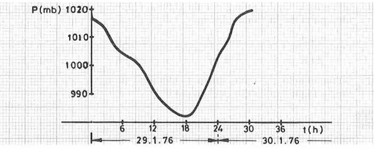
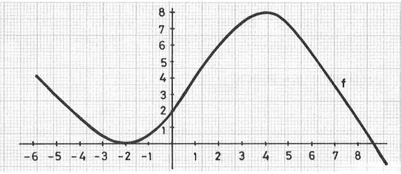
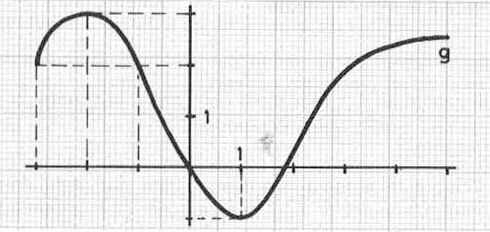
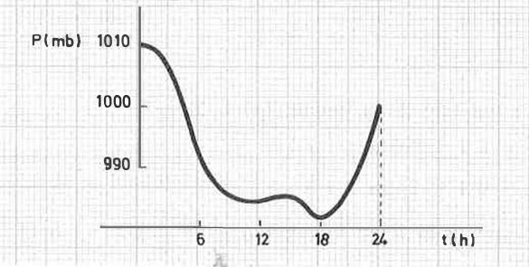
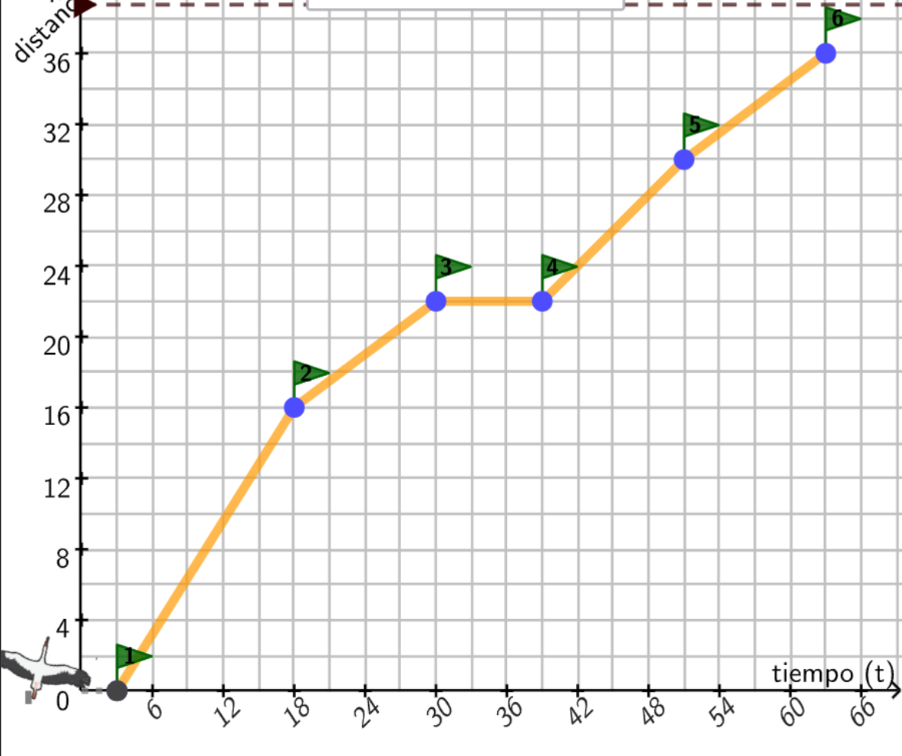
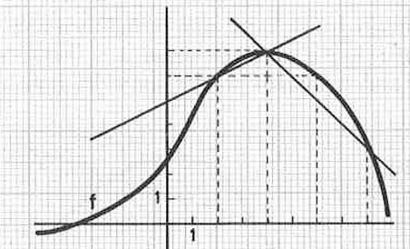
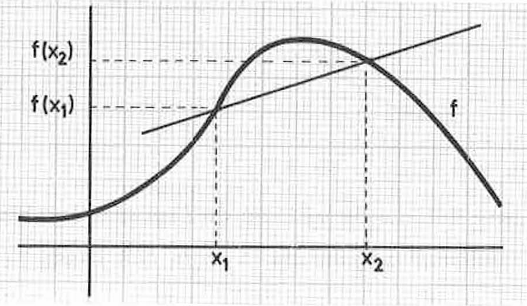

Resuelve paso a paso las siguientes cuestiones:
Variación de una función
- Duración:
- 15
- Agrupamiento:
- Parejas
Presión atmosférica y predicción meteorológica
La predicción meteorológica puede realizarse con la ayuda de un barómetro. Esta predicción se basa no tanto en el valor absoluto de la presión atmosférica en un momento determinado, sino en las variaciones bruscas que se producen en ella.
El siguiente gráfico muestra las observaciones de la presión atmosférica registradas en una estación meteorológica:

Presión atmosférica (en milibares) durante los días 29 y 30 de enero de 1976.
- Indica qué aparatos se utilizan para medir la presión atmosférica y qué unidades se emplean.
- ¿Cuál es la presión atmosférica a las 6 h de la mañana del día 29? ¿Y a las 12 h del mediodía?
- ¿A qué hora ha sido más baja la presión?
- ¿Cuál era la presión atmosférica a las 18 h y a las 24 h del día 29? ¿Qué variación ha habido entre esas horas? ¿Y entre las 18 h del día 29 y las 6 h del día 30? ¿Y entre las 0 h y las 12 h del día 30?
- ¿Cuál ha sido la variación de la presión atmosférica entre las 6 h y las 12 h del día 29? ¿Por qué puede considerarse negativa?
Variación de una función a partir de su gráfica
Consideremos la función f, representada en el siguiente gráfico:

- Halla los valores de \( f(-2) \), \( f(0) \), \( f(2.5) \), \( f(4) \), \( f(5.5) \) y \( f(6) \).
- La variación de \( f \) entre 2 y 4 es \( f(4) - f(2) = 8 - 6 = 2 \). Calcula las variaciones de la función entre los siguientes intervalos:
0 y 2 −2 y 2 3 y 5.5 −2 y 4
2 y 6 4 y 7 2.5 y 6 −1 y 5 - ¿Qué relación observas entre el signo de la variación y el hecho de que la función esté creciendo o decreciendo?
Variación de otra función
Dada la función g representada en la siguiente figura:

- Calcula la variación de \( g \) entre \( x = -1 \) y \( x = 1 \).
- Ahora calcula la variación entre \( x = 1 \) y \( x = 3 \).
- Encuentra un valor de \( x \) para el cual la variación de \( g \) entre \( x = 1 \) y ese valor sea \( 2 \).
- Encuentra los valores \( x_1 \) y \( x_2 \) para los cuales la variación de \( g \) entre ellos sea \( -3 \). Después, búscalos también de forma que la variación sea \( -4 \).
- Encuentra dos valores \( x_1 \) y \( x_2 \) para los cuales la variación de \( g \) entre ellos sea \( 0 \).
Variación de funciones polinómicas y lineales
Calcula la variación de las siguientes funciones en los intervalos indicados:
-
Función: \( f(x) = 3x^2 - 5x + 1 \)
- Entre 0 y 2
- Entre −2 y 3
- Entre 5 y 15
-
Función: \( f(x) = 3x - 5 \)
- Entre −1 y 0
- Entre 1 y 2
- Entre 0 y 1
- Entre 2 y 3
-
Función: \( g(x) = \frac{1}{2}x + 3 \)
- Entre −1 y 0
- Entre 1 y 2
- Entre 0 y 1
- Entre 2 y 3
-
Función: \( h(x) = -x + 7 \)
- Entre −1 y 0
- Entre 1 y 2
- Entre 0 y 1
- Entre 2 y 3
Comenta los resultados y compara las variaciones observadas para cada tipo de función.
Definición: Variación
En los ejercicios anteriores se ha utilizado el concepto de variación de una función.
La variación de una función \( f \) entre dos valores \( x_1 \) y \( x_2 \) (con \( x_1 < x_2 \)) es el número:
\( f(x_2) - f(x_1) \)
Variación por hora de la presión atmosférica
Recordando el problema anterior, para la predicción del tiempo lo que interesa es conocer las variaciones bruscas de la presión atmosférica. En concreto:
- Una caída de la presión atmosférica que dure más de tres horas y tenga una media superior a 1,7 milibares por hora anuncia mal tiempo. (Si ya lo hay, continuará).
- Un aumento de la presión atmosférica que dure más de tres horas y tenga una media superior a 1,7 milibares por hora anuncia buen tiempo. (Si ya lo hay, continuará).
- Una presión atmosférica estable no comporta ningún cambio de tiempo.
Por tanto, no basta con conocer la variación total de la presión atmosférica: también es necesario conocer la variación por hora.
En el gráfico siguiente, obtenido en un observatorio meteorológico, se observa que la variación de la presión atmosférica entre las 0 h y las 6 h ha sido de −20 mb. Durante ese intervalo de 6 h, la variación por hora ha sido:
\( \dfrac{-20}{6} = -3{,}3\ ext{mb/h} \)
Esto indica que a las 6 h de la mañana el observatorio podía predecir que el tiempo empeoraría.

- Calcula la variación por hora de la presión atmosférica entre los intervalos:
6 h–12 h, 12 h–18 h y 18 h–24 h. - A partir de la variación por hora entre las 18 h y las 24 h, ¿qué pronóstico podría hacer el observatorio?
- La variación por hora de la presión atmosférica también se llama tasa media de variación de la presión. Si la presión atmosférica en el instante \( t \) se representa por \( P(t) \), escribe la expresión general de la tasa media de variación de \( P \) entre \( t_1 \) y \( t_2 \).
El vuelo de la cigueña
El siguiente gráfico representa la distancia recorrida por una cigüeña durante su vuelo de observación. El eje horizontal indica el tiempo transcurrido (en minutos) y el eje vertical muestra la distancia recorrida (en kilómetros).

- ¿Qué distancia total ha recorrido la cigüeña?
- ¿Cuánto ha durado su vuelo completo?
- Calcula la velocidad media de la cigüeña en todo el recorrido.
- ¿En qué intervalo de tiempo la cigüeña se ha desplazado con mayor velocidad media? ¿Y en cuál ha sido más lenta?
- ¿Qué distancia había recorrido a los 20, 35 y 50 minutos?
- Calcula la velocidad media entre los minutos 20 y 35, y entre los minutos 35 y 60.
- ¿En qué momentos parece que la cigüeña se ha detenido o ha reducido notablemente su velocidad? Explica tu respuesta observando el gráfico.
- Si representamos la distancia recorrida hasta el instante \( t \) con la función \( d(t) \), escribe la expresión general de la velocidad media entre dos instantes \( t_1 \) y \( t_2 \).
Esta actividad está basada en el siguiente applet de Javier Cayetano
Definición: Tasa de Variación Media
La expresión de la velocidad media entre los instantes \( t_1 \) y \( t_2 \) encontrada en el problema de la cigueña es análoga a la expresión de la tasa media de variación de la presión atmosférica entre \( t_1 \) y \( t_2 \), obtenida en el problema anterior.
Tasa de Variación Media
La tasa media de variación de una función \( f \) entre \( x_1 \) y \( x_2 \) (con \( x_1 < x_2 \)) es el número:
\( \dfrac{f(x_2) - f(x_1)}{x_2 - x_1} \)
Más problemas sobre TVM
La TVM de una recta
Demuestra que, dada una función polinómica de primer grado \( f(x) = ax + b \), su tasa media de variación entre dos puntos cualesquiera \( x_1 \) y \( x_2 \) es precisamente \( a \).
Piedra al aire
Al lanzar verticalmente una piedra hacia arriba con una velocidad de 40 m/s, su altura (en metros) después de \( t \) segundos viene dada por:
\( d(t) = 40t - 5t^2 \)
- Construye una tabla que muestre la altura de la piedra a intervalos de un segundo desde \( t = 0 \) hasta \( t = 10 \).
- Dibuja con cuidado el gráfico correspondiente.
- ¿Cuál es la altura máxima que alcanzará la piedra? ¿Después de cuántos segundos?
- ¿Cuántos segundos tarda la piedra en volver a caer al suelo?
- ¿Pueden tener algún significado los valores de \( d(t) \) cuando \( t > 8 \) o bien cuando \( t < 0 \)?
- Calcula la velocidad media de la piedra durante los siguientes intervalos de tiempo:
Entre \( t = 0 \) y \( t = 2 \) Entre \( t = 4 \) y \( t = 7 \)
Entre \( t = 1 \) y \( t = 4 \) Entre \( t = 1 \) y \( t = 7 \)
Comenta los resultados obtenidos.
TVM y ángulo de la recta secante
Dada la función \( f \) representada en la figura:

- Calcula la tasa media de variación de \( f \) entre \( x = 2 \) y \( x = 4 \), y entre \( x = 4 \) y \( x = 8 \).
- Calcula el ángulo respecto de la horizontal (antes llamado coeficiente angular) de la recta que pasa por los puntos \( (2,6) \) y \( (4,7) \).
- Calcula el ángulo respecto de la horizontal de la recta que pasa por los puntos \( (4,7) \) y \( (8,3) \).
- Explica por qué los resultados del apartado a) coinciden con los de los apartados b) y c).
Rectas secantes a una gráfica y el ángulo que forman
Recta secante y tasa media de variación
Dada una función \( f \), una recta como la indicada en la figura se denomina recta secante al gráfico de \( f \). Una recta secante a la función \( f \) queda determinada por dos puntos del gráfico, de abscisas \( x_1 \) y \( x_2 \).

La tasa media de variación de \( f \) entre los puntos \( x_1 \) y \( x_2 \) (con \( x_1 < x_2 \)) está directamente relacionada con el ángulo que forma la recta secante con la horizontal.
\[ an( heta) = \frac{f(x_2) - f(x_1)}{x_2 - x_1} \]
Por tanto, la tasa media de variación de la función entre \( x_1 \) y \( x_2 \) coincide con la tangente del ángulo \( heta \) que la recta secante forma con el eje horizontal.